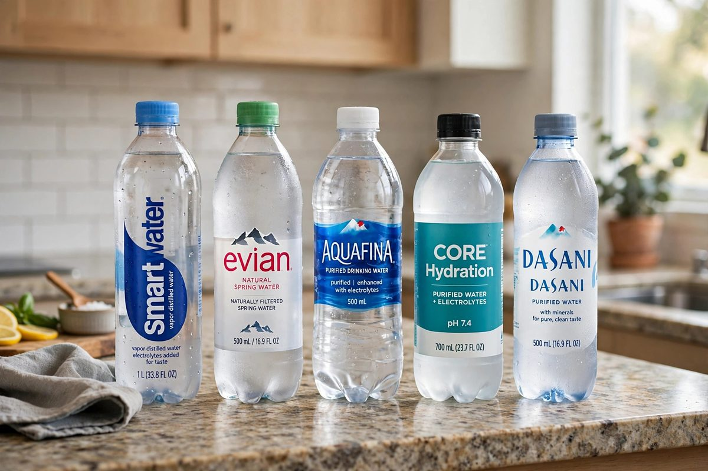

Can You Drink Too Much Water?
Overhydration and hyponatraemia explained: how much is too much, who is at risk, and how to stay in the safe range.
Drinking enough water is healthy, but drinking far too much in a short time can be dangerous. The risk is a condition called hyponatraemia, in which the blood's sodium becomes too dilute. It is rare in everyday life, but it does happen, mostly during endurance exercise or deliberate over-drinking. This guide explains how it works, who is at risk, and how to stay in the safe range.
What hyponatraemia is
Hyponatraemia means low sodium in the blood. Sodium helps control the balance of water inside and outside cells, and when the blood becomes too dilute, water moves into cells, including brain cells, which swell. The symptoms start with headache, nausea and confusion, and in severe cases can include seizures and loss of consciousness. It is a medical emergency when severe, and it needs hospital treatment. The condition is caused by drinking far more water than the body can process, not by normal drinking.
How much is too much
Healthy kidneys can process roughly 0.8 to 1 litre of water an hour, so drinking more than that for hours on end can overwhelm them. In practice, problems usually involve several litres in a short period, or sustained over-drinking during endurance events. A normal daily intake of 2 to 3 litres spread across the day is safe for most healthy adults. The risk comes from volume and speed together: a litre in an hour is fine, but several litres in an hour is not.
Who is at risk
Endurance athletes are the best-known group, because they may drink large volumes during a race while also losing salts in sweat. People taking certain medicines, including some diuretics and antidepressants, can be more vulnerable. People with kidney, heart or liver conditions may need to limit fluids, and a doctor can advise on the right amount. Children and older adults are more sensitive to rapid changes in fluid balance. Anyone who has been told to limit fluids should follow that advice rather than a general guideline.
Symptoms to watch for
Early symptoms of overhydration look similar to dehydration, which is confusing: headache, nausea, confusion and swelling of the hands, lips or feet. The difference is the history: if you have been drinking very large volumes, especially during exercise, and your urine is completely clear, overhydration is more likely. Vomiting, severe headache, confusion or drowsiness after heavy drinking need medical attention promptly. Do not try to treat it by drinking more.
Staying in the safe range
Spread your intake through the day instead of drinking large volumes at once. Drink to thirst as well as to a target, and let urine colour guide you: pale straw is right, completely clear all day suggests you may be drinking more than needed. During long exercise, drink to a plan rather than forcing maximum volumes, and include salts for sessions over 90 minutes. If you take medicines or have a health condition that affects fluid balance, ask your doctor for a personal range rather than following a general target.
A safe day, planned out
A safe day of drinking is simple: spread 2 to 3 litres across the waking hours, in glasses of 200 to 300 ml, with no more than about a litre in any single hour. Drink to thirst as well as to the target, and let pale urine be the guide. During exercise, drink 400 to 800 ml per hour, not more, and include salts for sessions over 90 minutes. Avoid drinking several litres in a short time, even as a challenge, because that is how problems happen. The rule is not complicated: small drinks, spread out, guided by thirst and urine colour, and no heroic volumes. Follow it, and overhydration is not something you need to worry about.
Frequently Asked Questions
Can drinking too much water be dangerous?
Yes, rarely. Drinking far more than the kidneys can process can dilute blood sodium, a condition called hyponatraemia, which needs medical attention.
How much water is too much?
Problems usually involve several litres in a short period. A normal 2 to 3 litres spread across the day is safe for most healthy adults.
Who is most at risk?
Endurance athletes drinking large volumes during races, and people with kidney, heart or liver conditions or on certain medicines.